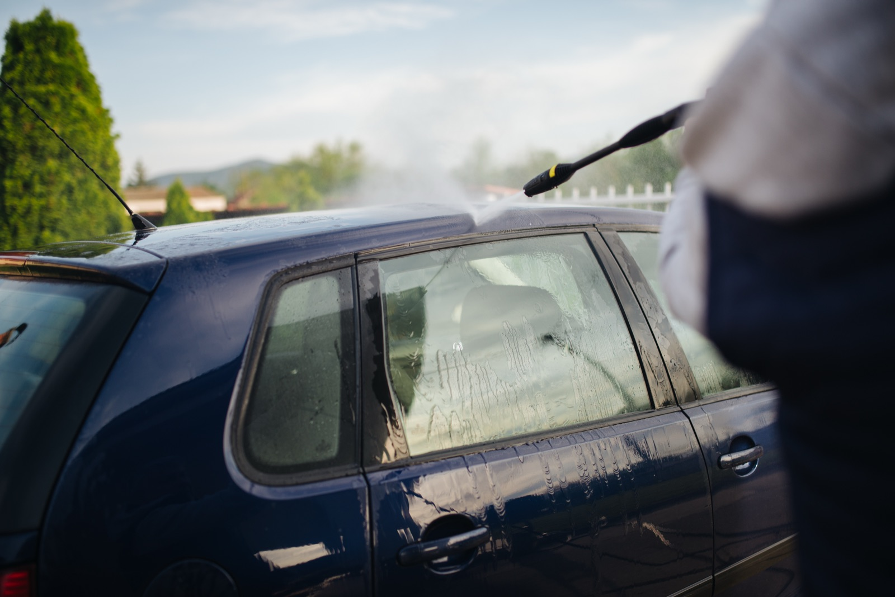

High-pressure washing where surfaces can take it, soft washing where they can't — driveways, patios, render and roofs cleaned without damaging them.
Power washing is the right call for concrete, block paving, driveways and patios — built-up dirt, moss and algae lifted in one pass. Soft washing uses lower pressure with the right cleaning agents for surfaces that pressure can damage, like painted render, roof tiles and timber cladding.
We assess the surface before we start and pick the method that gets it clean without stripping paint, cracking grout or forcing water under tiles.